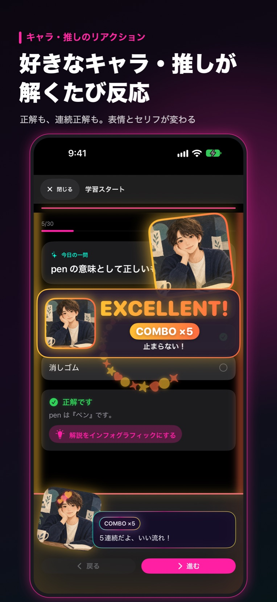
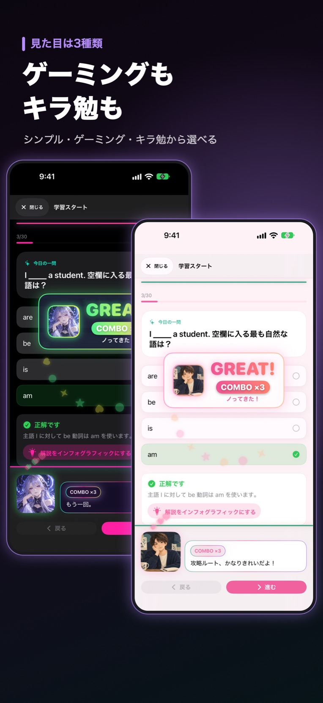
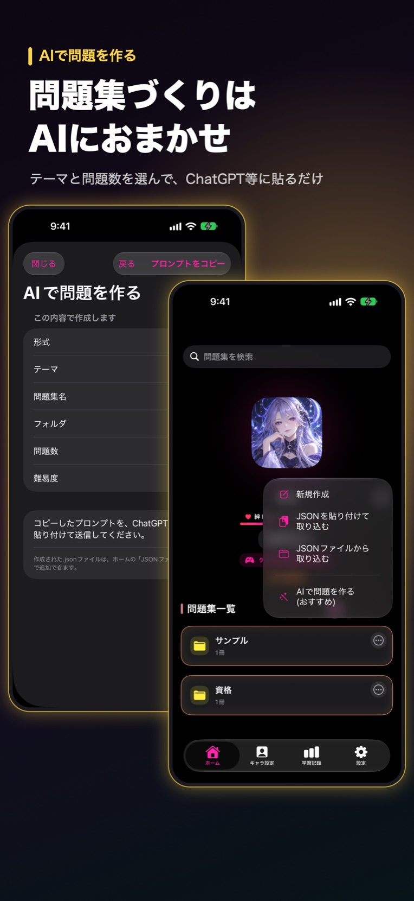
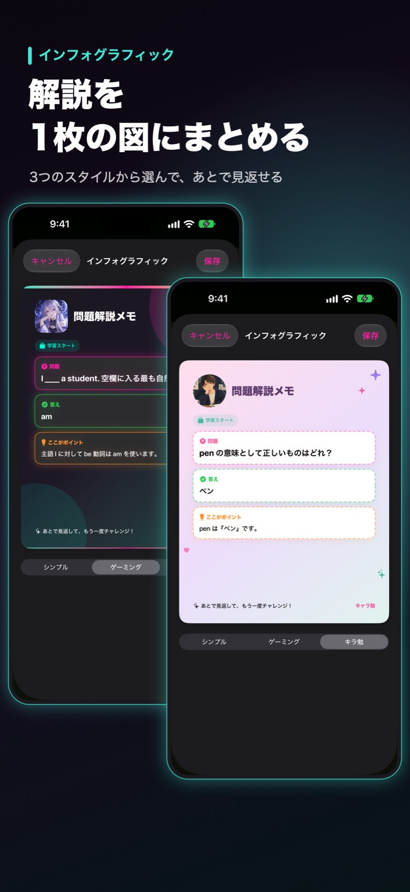
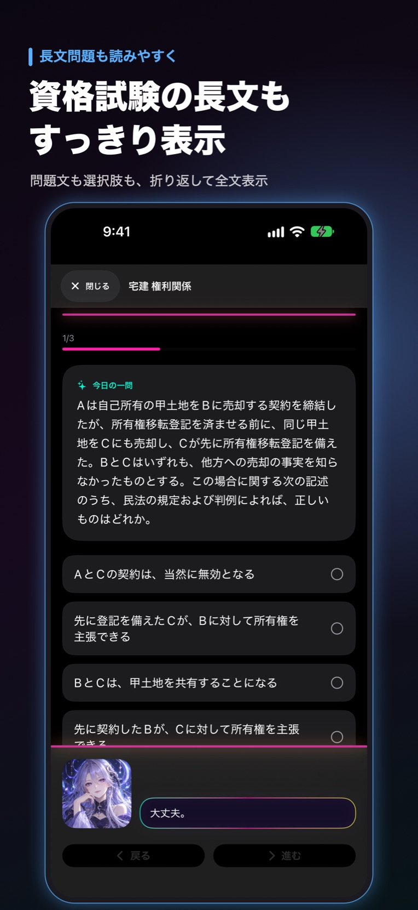
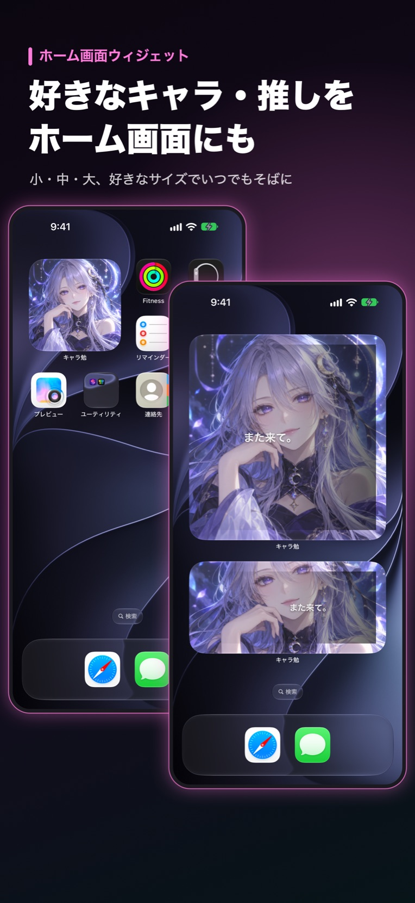

自分だけの学習キャラを作る
好きな画像・名前・セリフ・音声でキャラを作成。画像は位置や大きさを調整してトリミングでき、透過画像にも対応しています。
iPhone STUDY APP
好きなキャラや推しの画像で、自分だけの学習キャラを作成。自分で作った4択問題や暗記カードに答えるたび、表情とセリフで反応します。ドパ勉をオンにすれば、コンボや紙吹雪の演出が加わります。
iPhone対応・基本無料・アカウント登録なし

FEATURES
好きな画像・名前・セリフ・音声でキャラを作成。画像は位置や大きさを調整してトリミングでき、透過画像にも対応しています。
正解、不正解、連続正解、結果に合わせて表情とセリフが変化。「ミステリアス」などのセリフプリセットから話し方も選べます。
4択問題と暗記カードに対応。アプリのプロンプトをChatGPTなどの生成AIに貼り付ければ、作った問題やセリフをまとめて取り込めます。アプリからAIサービスへ直接接続はしません。
LOOKS & DOPA STUDY
好みの見た目を選んで、ドパ勉のオン・オフはどの見た目とも組み合わせられます。
演出を控えめにした、落ち着いた見た目。
COMBOや外枠にネオン演出。「派手」にすると問題文や選択肢もネオンで彩られます。
ピンク・ラベンダー・ミントのパステル配色にキラキラ飾り。学習後は今日の記録を「キラ勉カード」画像にして保存できます。
ドパ勉
ドパ勉をオンにすると、正解するたびにコンボ演出が出て、連続正解でどんどん派手に。紙吹雪やキャラのカットインが入り、キャラのリアクションも大きくなります。
INFOGRAPHICS
問題の解説や問題集の概要を、キャラと一緒にインフォグラフィック画像として作成・保存できます。スタイルはシンプル・ゲーミング・キラ勉から選べます。外部の生成AIで画像を作るためのプロンプトもコピーできます。
APP SCREENS





ON YOUR DEVICE
問題集、学習記録、キャラ設定、画像、音声、保存したインフォグラフィックは端末内に保存されます。必要に応じてバックアップを書き出し、iCloud Driveに保存することもできます。アカウント登録は不要で、外部AIサービスにも直接接続しません。
PRIVACY POLICY
最終更新日：2026年9月14日
本アプリは、問題集、問題と解答、学習記録、復習状態、フォルダ・アーカイブ・ピン留めの設定、キャラクター設定、名前、表示用画像・表情画像・音声、表示・通知設定、オンボーディングの完了状態、バックアップに必要な情報を端末内に保存します。
これらは学習、表示、復習、バックアップおよび復元のために利用し、開発者が運用するサーバーへ送信・収集しません。アカウント登録や独自のアクセス解析SDKは使用しません。利用者はバックアップファイルを書き出し、iCloud Driveなどの外部ストレージを保存先に選べます。その場合、保存先サービスのポリシーが適用されます。
運営費用のため、Google LLCのGoogle Mobile Ads SDK(AdMob)によるバナー広告を表示します。広告事業者は、IPアドレスと大まかな地域、端末・SDK識別子、技術情報、広告の表示・操作情報、診断・パフォーマンス情報を広告配信、不正防止、計測、品質改善等に利用する場合があります。
公開初期はATTの許可を求めず、IDFAによる追跡型広告を目的として利用者を追跡しない方針です。詳細はGoogleプライバシーポリシーとGoogle Mobile Ads SDKのデータ開示をご確認ください。
広告を恒久的に非表示にする非消耗型アプリ内購入も提供します。決済はAppleが処理し、開発者はカード情報を受け取りません。
学習リマインドを有効にした場合、端末上のローカル通知を使用します。通知内容と設定を開発者のサーバーへ送信しません。
キャラクター画像、表情画像、音声として選択したファイルは端末内に保存し、開発者へ送信しません。問題JSONやバックアップも端末上で処理します。
問題JSONやインフォグラフィック画像を作成するためのプロンプトをコピーできますが、本アプリは外部AIサービスへ直接接続しません。外部サービスに入力した情報は、そのサービスのポリシーに従います。
広告配信事業者による前記の取り扱いを除き、学習内容、キャラクター設定、画像、音声、バックアップ内容を第三者へ提供しません。
保護者の同意が必要な年齢の利用者は、適用法令に従い保護者の関与のもとで利用することを想定しています。広告を含むため、App Storeの年齢レーティングと端末のコンテンツ制限をご確認ください。
お問い合わせはcharaben.support@gmail.comまで。法令、広告SDK、機能の変更に応じて本ポリシーを改定することがあります。重要な変更は本ページまたはアプリ内でお知らせします。